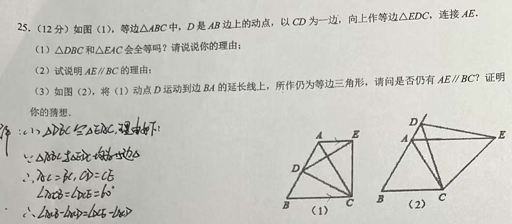
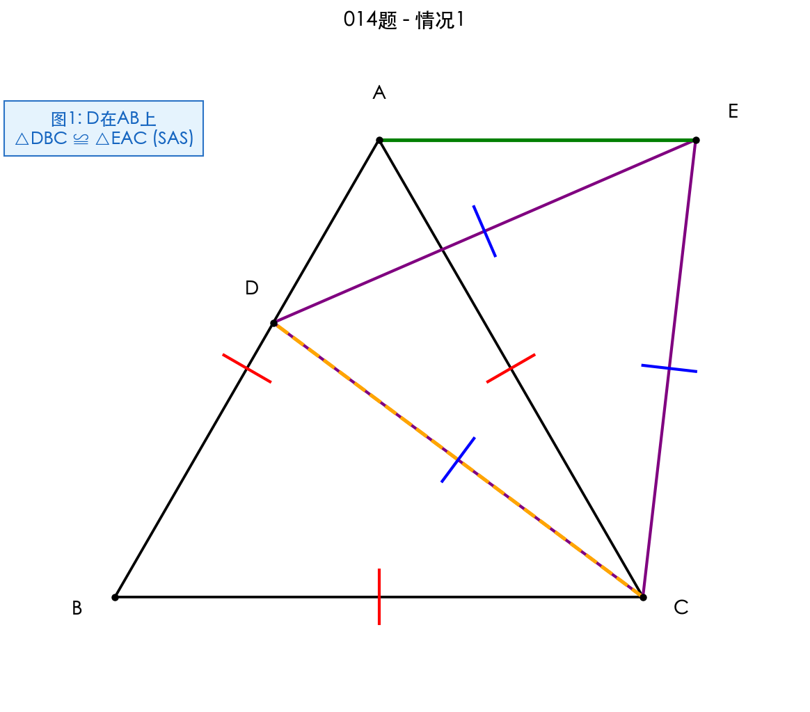
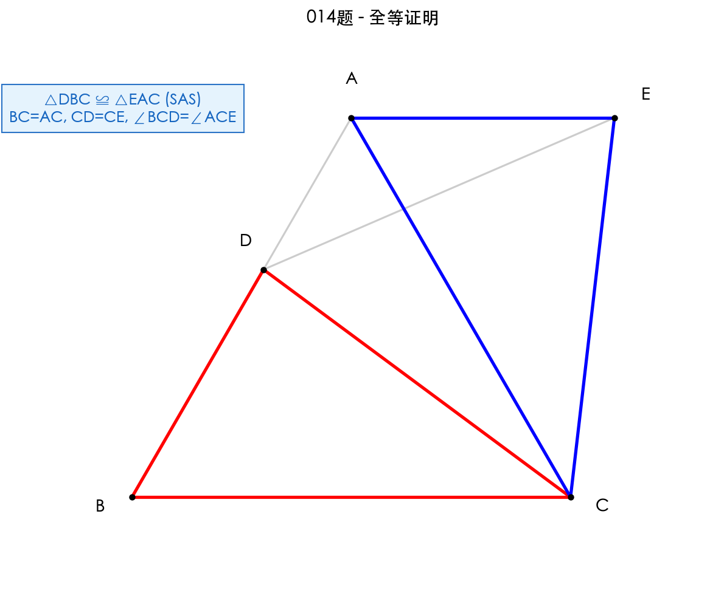
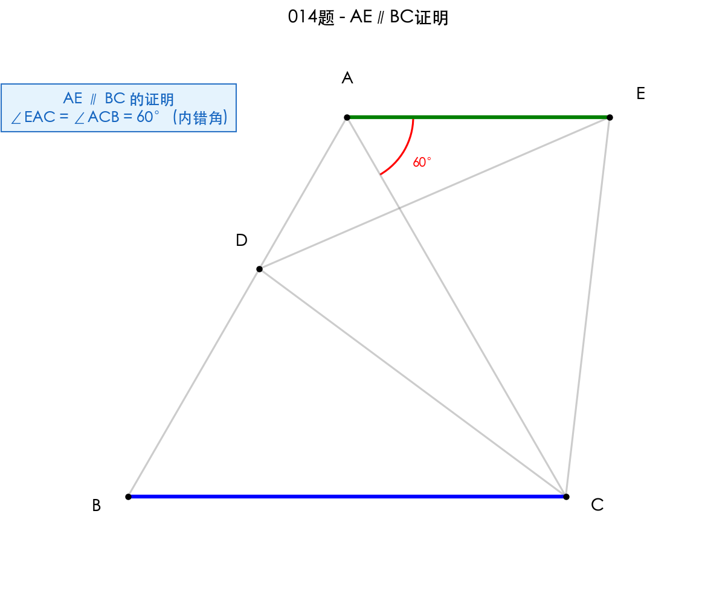
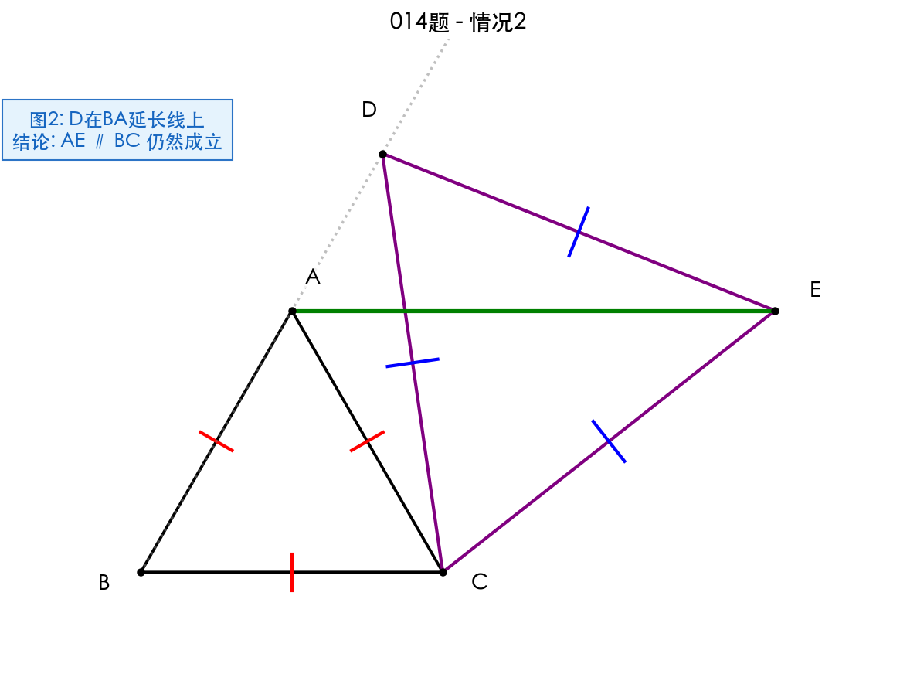

题目
如图(1)，等边△ABC中，D是AB边上的动点，以CD为一边，向上作等边△EDC，连接AE。
(1) △DBC和△EAC会全等吗？请说说你的理由；
(2) 试说明 AE∥BC 的理由；
(3) 如图(2)，将(1)动点D运动到边BA的延长线上，所作仍为等边三角形，请问是否仍有 AE∥BC？证明你的猜想。

问题(1)：证明△DBC≌△EAC

已知条件：
• △ABC是等边三角形，AB=BC=CA，∠ABC=∠BCA=∠CAB=60°
• △EDC是等边三角形，ED=DC=CE，∠EDC=∠DCE=∠CED=60°
• D是AB边上的动点
结论：△DBC ≌ △EAC
证明：
在△DBC和△EAC中：
1. BC = AC（等边△ABC的边）
2. CD = CE（等边△EDC的边）
3. ∠BCD = ∠ACE
• ∠BCA = 60°，∠DCE = 60°
• ∠BCD = 60° - ∠DCA
• ∠ACE = 60° - ∠DCA
• 因此 ∠BCD = ∠ACE
由SAS判定，△DBC ≌ △EAC
💭 思考问题
全等三角形详解

图中用红色高亮了△DBC，用蓝色高亮了△EAC。
对应关系：
• B ↔ A（都是等边三角形的顶点）
• C ↔ C（公共顶点）
• D ↔ E（构造的等边三角形的顶点）
关键观察：
两个等边三角形△ABC和△EDC共用顶点C，且∠BCA = ∠DCE = 60°。
当两个等边三角形共用一个顶点时，通过旋转60°可以将一个三角形变换到另一个三角形的位置。这种"共顶点等边三角形"模型是几何中常见的全等模型。
💭 思考问题
问题(2)：证明AE∥BC

结论：AE ∥ BC
证明：
由(1)知 △DBC ≌ △EAC
所以 ∠EAC = ∠DBC（全等三角形对应角相等）
因为 D在AB上，所以 ∠DBC = ∠ABC = 60°
因此 ∠EAC = 60°
又因为 ∠ACB = 60°（等边三角形内角）
所以 ∠EAC = ∠ACB = 60°
由于∠EAC和∠ACB是内错角，且相等
因此 AE ∥ BC（内错角相等，两直线平行）
💭 思考问题
问题(3)：D在BA延长线上的情况

问题：当D运动到边BA的延长线上时，是否仍有AE∥BC？
结论：仍然成立
证明：
第一步：证明△DBC ≌ △EAC
在△DBC和△EAC中：
• BC = AC（等边△ABC）
• CD = CE（等边△EDC）
• ∠BCD = ∠ACE
- ∠BCD = ∠BCA + ∠ACD = 60° + ∠ACD
- ∠ACE = ∠DCE + ∠ACD = 60° + ∠ACD
由SAS，△DBC ≌ △EAC
第二步：证明AE∥BC
由全等知 ∠EAC = ∠DBC
因为D在BA延长线上，∠DBC = 180° - 60° = 120°
所以 ∠EAC = 120°
∠EAC + ∠ACB = 120° + 60° = 180°
由于∠EAC和∠ACB是同旁内角，且互补
因此 AE ∥ BC（同旁内角互补，两直线平行）
💭 思考问题
思路梳理
最终答案
(1) △DBC ≌ △EAC (SAS)
(2) AE ∥ BC (内错角相等)
(3) AE ∥ BC 仍然成立 (同旁内角互补)
解题流程
知识点
解题技巧
- • 寻找全等条件：利用等边三角形的边相等和角相等，快速找到全等三角形的对应边和对应角
- • 角度转化：通过角度的和差关系证明角相等
- • 分类讨论：动点D的位置变化会影响角度关系，但全等关系始终成立
- • 平行判定的灵活性：根据具体情况选择内错角相等或同旁内角互补
- • 模型识别：本题属于"共顶点等边三角形"模型，旋转60°可相互转化